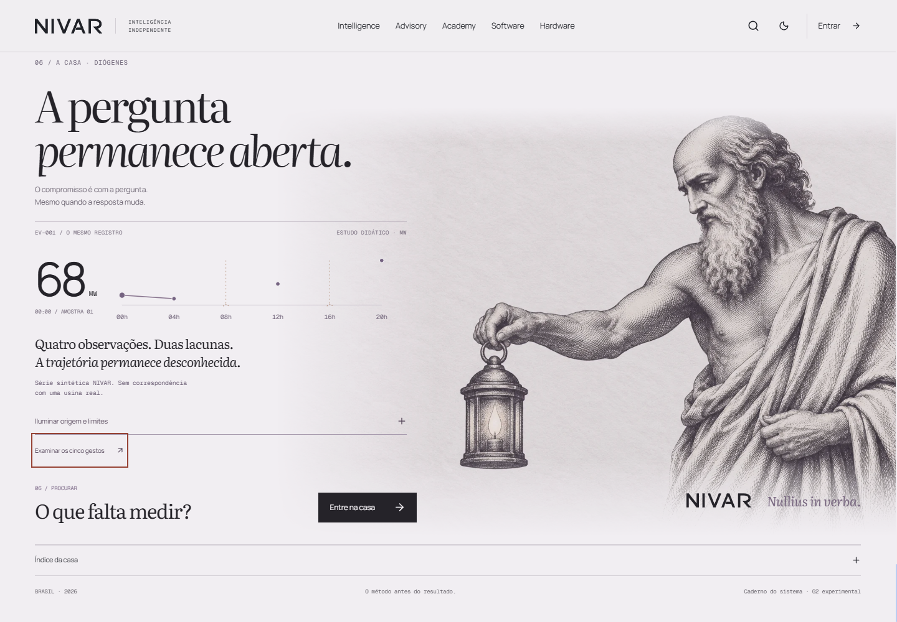
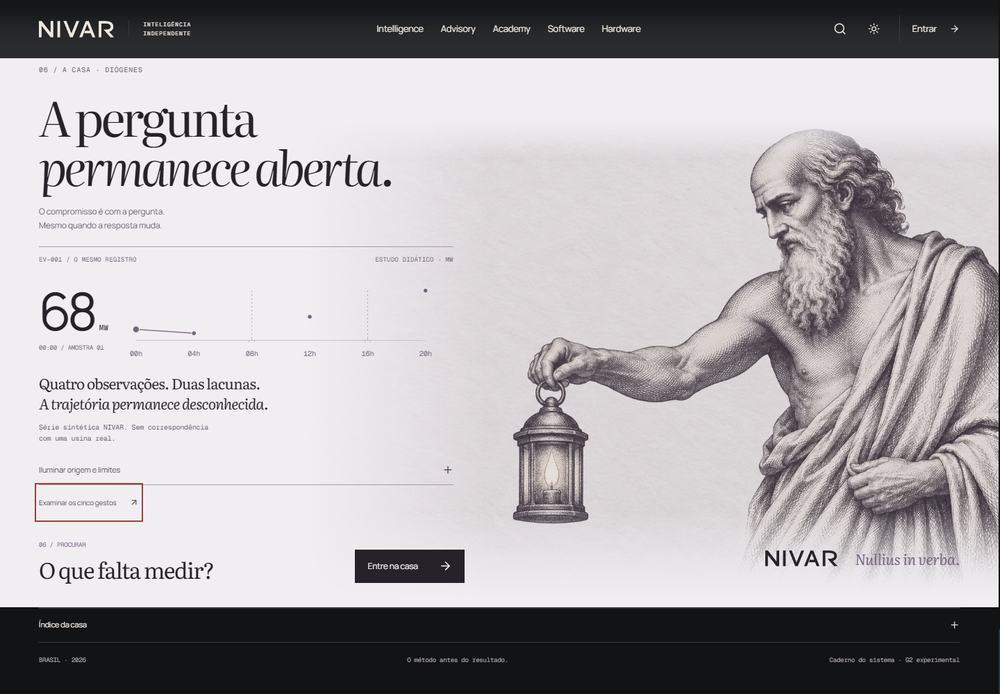
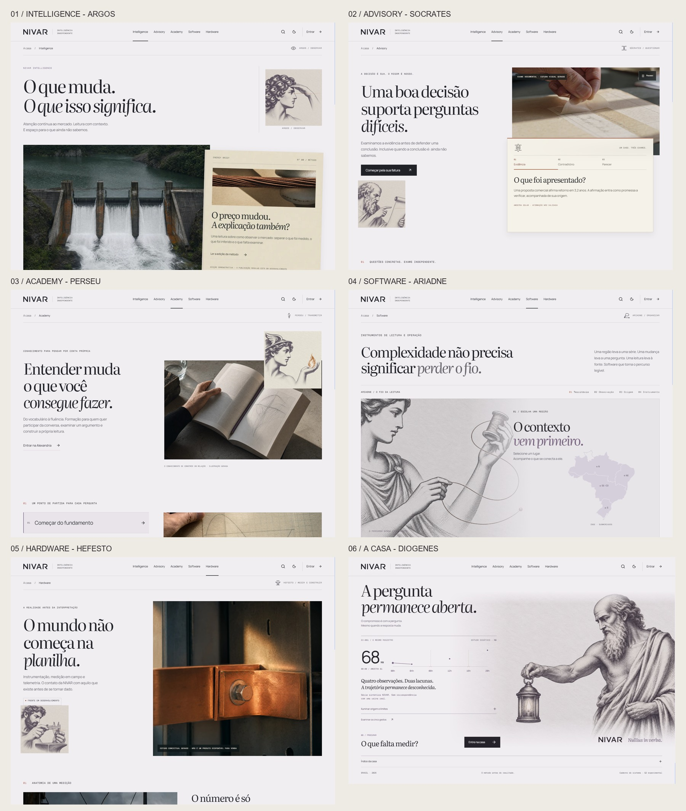

Gravações nativas, telas atuais, fontes e críticas independentes. Este caderno permite examinar as quatro peças da rodada e voltar às falhas que motivaram suas correções.
Abrir o Portal local ↗ · Histórico do Design Loop · Entrega, verificação e limites
O ciclo da interface dura 18s. As gravações incluem a volta e o início do ciclo seguinte; seus timestamps preservam o tempo real da captura.
Séries sintéticas declaradas. A interface não apresenta preços de mercado conectados ou telemetria ao vivo.



Base G2.1 e checkpoint estrutural preservados. Alexandria, backend, contratos, autenticação e dados compartilhados não foram alterados nesta rodada.